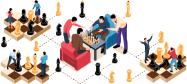

TEM International, we train and educate all interllectual and board games in the world
Giving birth to and rising Born-Again christian champions of all games of all times
Games trained;
- Chess
- Checkers
- Ludo
- Draft
Services Offered;
- Preach the true gospel of Jesus Christ
- Teach interllectual board games like Chess
- Train how to use musical instruments like Pianoes etc..
- Rehabilitate young children and adults with several addictions
- Organise chess tournaments and holiday makers training programs
- Train Born-again christian chess abbitors, coaches and champions

And he said unto TEM, Go you into all the world, and preach the gospel to every creature in "Mark 16:15"
We preach the gospel through games, sports and music to treat souls

Lets build our minds and brains through learning the interllectual board games
Chess is a brain building game which teaches us how to think.

From brain stoming to a brain relaxing thelapy of music in Jesus Christ
Music is another brain building and soul healing 'Balm' through Jesus Christ our Lord.
He raises up the poor out of the dust, and lifts up the beggar from the rubbish, to set them among Princes,and make them inherit the throne of glory in "1 Samuel 2:8"
We rehabilitate the taken to be useless street kids and drug addicts to useful Born-again champions.
